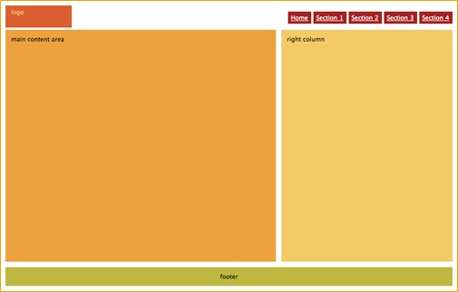

<!DOCTYPE html>
<html lang="en">

<head>
    <title>Exercise. Fourteenth RWD Session</title>
    <meta charset="utf-8">
    <meta name="viewport" content="width=device-width, initial-scale=1">
    <link rel="stylesheet" href="css/bootstrap.min.css">
    <script src="https://ajax.googleapis.com/ajax/libs/jquery/3.2.1/jquery.min.js"></script>
    <script src="js/bootstrap.min.js"></script>
    <link href="css/styles.css" rel="stylesheet" type="text/css"> </head>

<body>
    
    <div class="row">

        <div class="col-md-6"></div>

        <div class="col-md-6">

            <div class="row">

                <div class="col-md-6"></div>

                <div class="col-md-6"></div>

            </div>

            <div class="row">

                <div class="col-md-6"></div>

                <div class="col-md-6"></div>

            </div>

        </div>

    </div>
    
<!--
    <h1>Exercise, Fourteenth RWD Session</h1>
    <p>Try out the Bootstrap Grid Layout features. The necessary files to enable Bootstrap features have already been include in this webpage project.</p>
    <div class="row">
        <div class="col-sm-9 col-md-5">Field 1</div>
        <div class="col-sm-3 col-md-7">Field 2</div>
    </div>
    <div class="row">
        <div class="col-md-4">Field 3</div>
        <div class="col-md-4 hidden-sm">Field 4</div>
        <div class="col-md-4">Field 5</div>
    </div>
    <div class="row">
        <div class="col-xs-1">Field 6</div>
        <div class="col-xs-1 col-xs-offset-2">Field 7</div>
        <div class="col-xs-1 col-xs-offset-2">Field 8</div>
        <div class="col-xs-1 col-xs-offset-2">Field 9</div>
    </div>
    <ol>
        <li>Create a Grid Layout row with two fields. One field should take up 9 columns when the browser window is bigger than 768 pixels and 5 columns when the window is bigger than 992 pixels. The other field should be sized to accommodate that.</li>
        <li>Field 4 should not be visible when the browser window is between 768 to 992 pixels.</li>
        <li>There should be a two column space between fields 6, 7, 8 and 9.</li>
        <li>Try again to recreate the webpage shown on the picture below, but this time use Grid Layout to arrange the elements and include one or more breakpoints to create the mobile version.You may need to add text or other elements to your layout.</li>
    </ol>  
-->
</body>
</html>